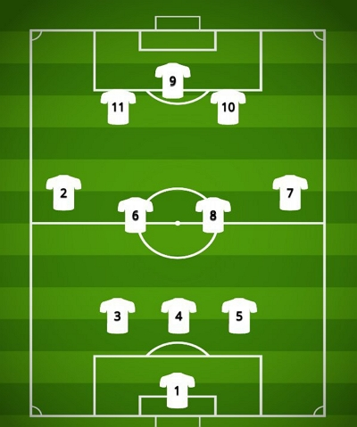

Bienvenidos al Club Atlético San Fernando
La pasión del fútbol en Catamarca.

Arqueros
- Juan González - #1
- Marcos Pérez - #12
Defensores
- Carlos Rodríguez - #2
- Matías López - #3
- Diego Fernández - #4
- Javier Martínez - #5
- Andrés Silva - #14
- Pedro Díaz - #15
Mediocampistas
- Fernando Gutiérrez - #6
- Luis Herrera - #7
- José Castro - #8
- Emiliano Vargas - #10
- Raúl Mendoza - #16
- Ángel Sosa - #18
Delanteros
- Mario Sánchez - #9
- Ricardo Flores - #11
- Cristian Rojas - #17
- Diego Morales - #19
Informacion Adicional